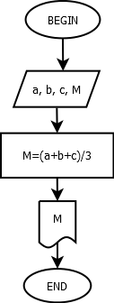
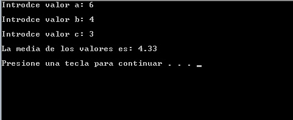

Se pretende calcular la media de 3 valores ingresados por el usuario
Pseudocódigo
ProcesoMedia
Escribir("Introduce valor a: ");
Leer a;
Escribir("Introduce valor b: ");
Leer b;
Escribir("Introduce valor c: ");
Leer c;
m = (a + b + c)/3;
Escribir("La media de los valores es: f", m);
pausar sistema;
FinProceso
Diagrama de Flujo

Código en Lenguaje C
Este programa muestra la suma de todos los numeros enteros pares que hay del 1-100.
#include<stdio.h>
#include<stdlib.h>
//Programacion estructurada//
int main ()
{
//Calculando la media de tres valores//
float a,b,c,M;
printf("Introdce valor a: ");
scanf("%f",&a);
printf("Introdce valor b: ");
scanf("%f",&b);
printf("Introdce valor c: ");
scanf("%f",&c);
M=(a+b+c)/3; //Calculamos la media de los 3 valores
printf("La media de los valores es: %.2f",M);
system("PAUSE");
return 0;
}
Salida del programa
